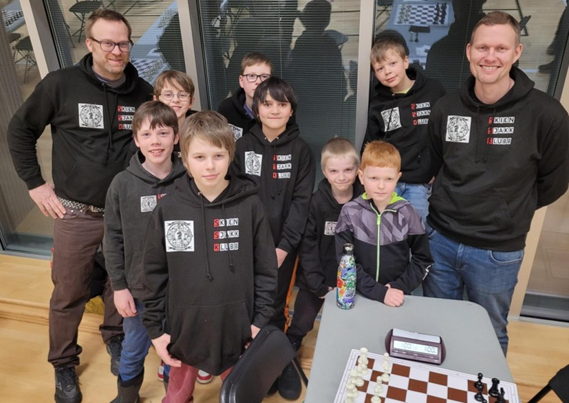
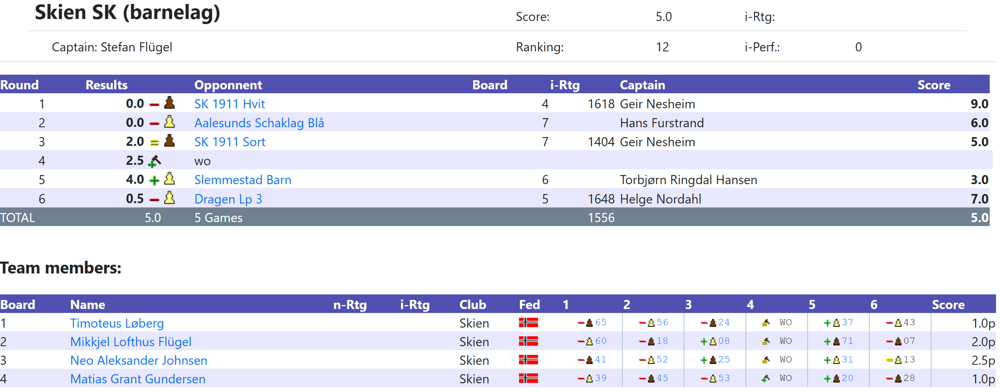
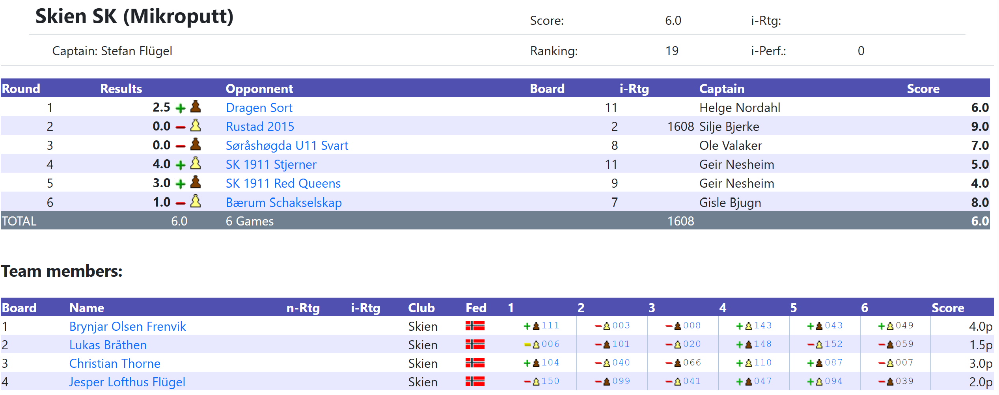

NM for barnelag i Oslo (1.3.2026)
Skien sjakklubb stilte med to lag i NM for barne- og ungdomslag 2026 på Norges idrettshøgskole i Oslo 27. feb.–1. mars 2026. Laget i klasse Mikro/Miniputt (dvs. barn født i 2015 eller senere) besto av Brynjar, Lukas, Christian og Jesper. Andreas var lagleder. Laget i Lilleputtklassen (kalt barneklassen i NM) besto av Timoteus, Mikkjel, Neo og Matias. Stefan var lagleder.
Miniputtlaget vant 3 partier av totalt 6 kamper (mot Dragen og to lag fra SK 1911) og kom med dette på 19. plass (av 32 lag). Brynjar ble lagets toppscorer med 4 sterke seire på bord 1.
Lilleputtlaget vant en flott 4–0-seier mot Slemmestad i runde 5, men måtte nøye seg med 2–2 mot SK 1911 og en walkover-seier. Dette holdt til 12. plass (av 15 lag). Toppscorer ble Neo med 2,5 poeng (av 5 mulige) på bord 3.
Bra innsats av alle spillerne, som alle bidro med minst én seier og tok med seg mye nyttig erfaring hjem. Det var god stemning på lagene, med mye felles spilling i pausene, og et (nesten) fullt lag spiste middag sammen på lørdag. Det var også god stemning hos foreldrene. Takk til alle som bidro.
Vi må ikke glemme Ramin, som var dommer under NM og bidro sammen med den øvrige dommerstaben og arrangørene i SK 1911 til at turneringen ble godt gjennomført.
Turneringen ga mersmak og fristet til flere NM-deltakelser i årene som kommer. Det er noe spesielt med lagkonkurranser, og jeg tror også barna synes det er morsomst å spille sammen på lag!


